an interactive explainer
How Far Can You Fold a Piece of Paper?
Pick a sheet, then fold it in half, again and again. Each fold doubles its thickness — watch the world around it rescale as it grows.
Fold the paper
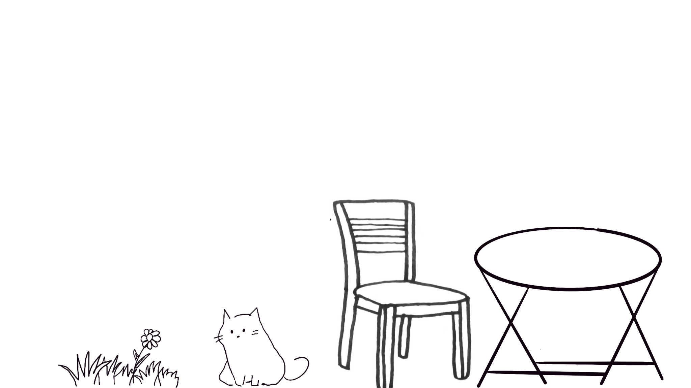
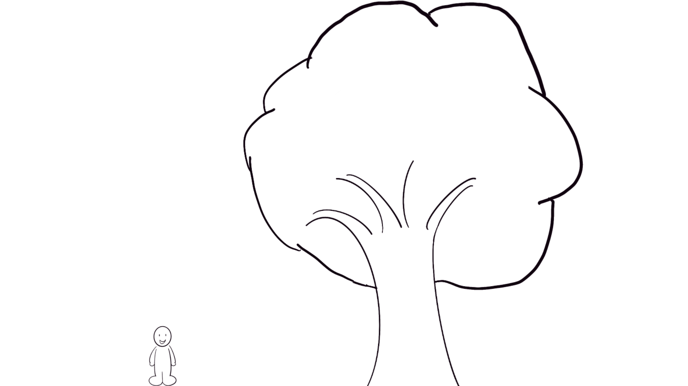
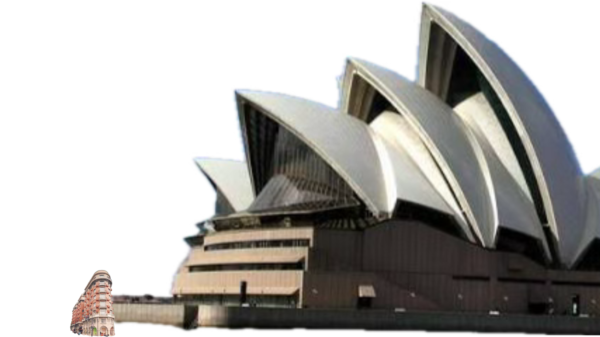
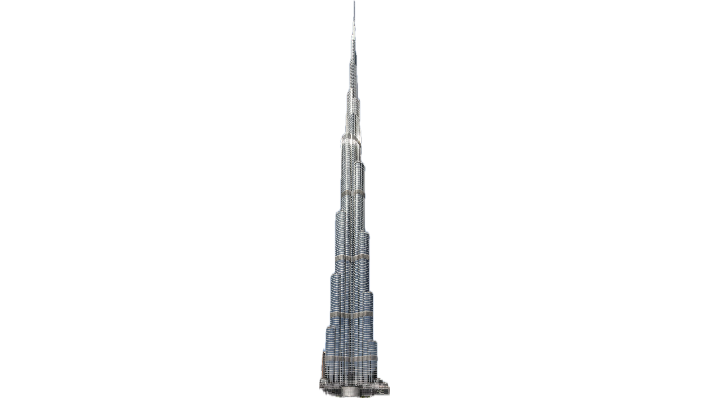
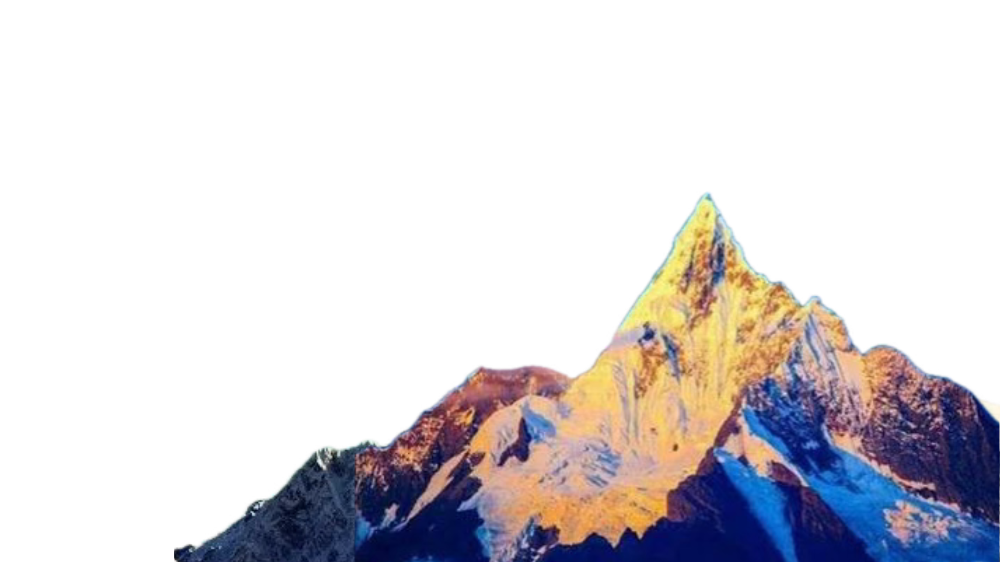
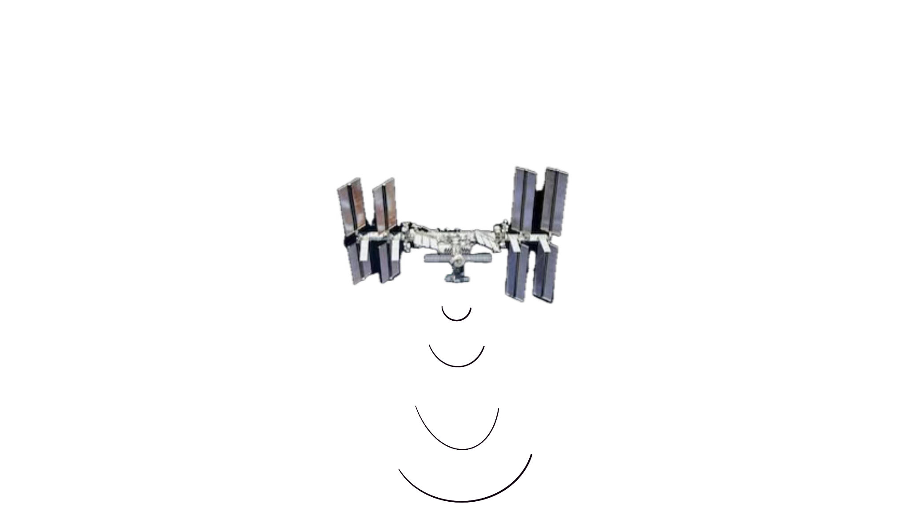
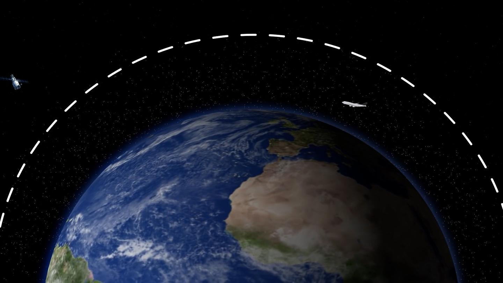

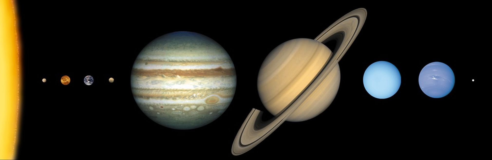
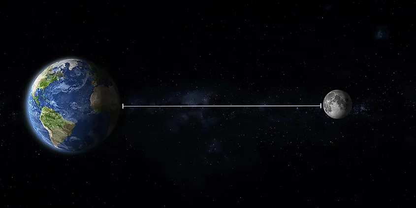
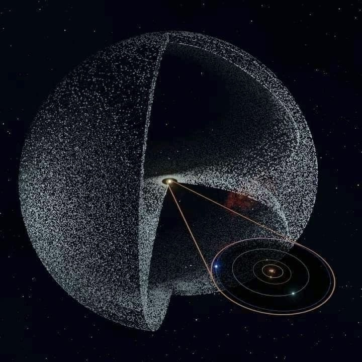
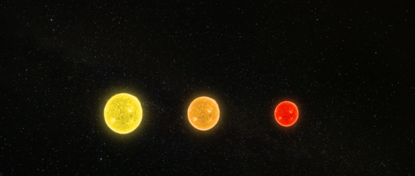

0.100 mm tall — about as tall as a blade of grass
Ninety folds. This little sheet has drifted past the Milky Way and kept going — not sure it still counts as paper. It's out there now, small and bright, looking for the next thing to be bigger than. ✦
- folds so far
- 0
- thickness now
- 0.100 mm
Real paper starts fighting back around here. Past this point we're estimating with Britney Gallivan's folding equation for a sheet this size — not a lab measurement of this exact paper. The exact practical limit isn't a universal rule: it depends on the sheet's size, thickness, and material, and a much larger or thinner sheet can go further than this one.
Real paper's practical limit for this sheet is about here. Want to see it again?